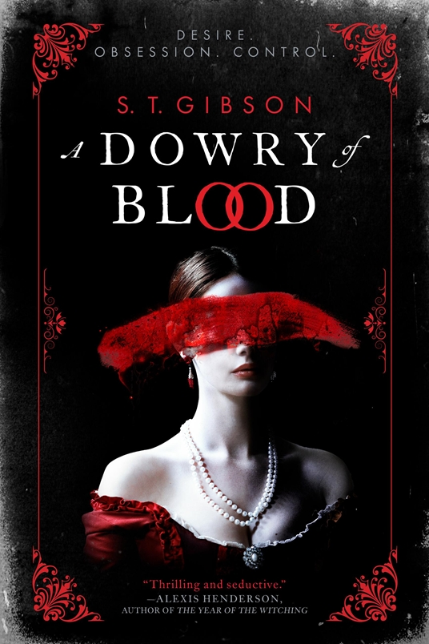
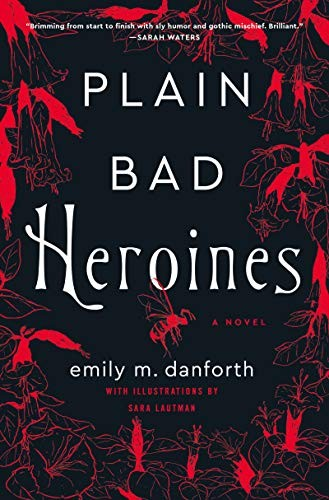
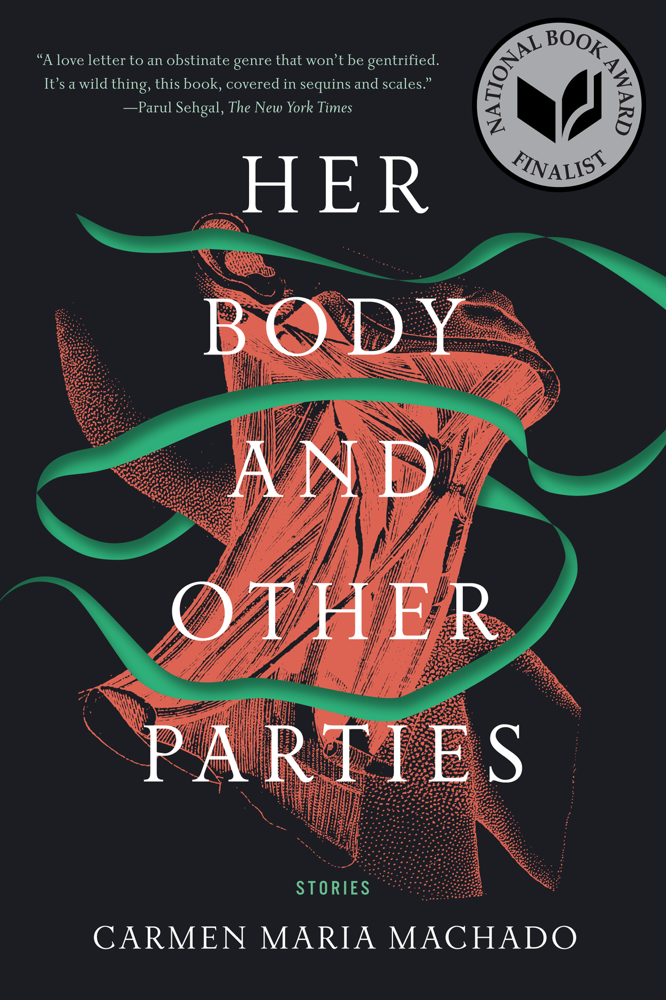
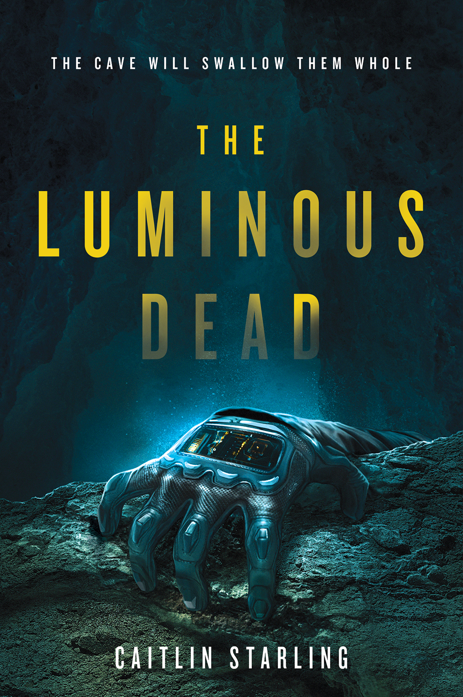

Pinboard post
Queer
Halloween Reads for Every Kind of Scare
Four queer horror reads for Halloween, from sapphic gothic intrigue and Dracula’s first bride to uncanny short stories and a claustrophobic cave descent.
Halloween reading doesn’t have to mean one particular kind of scare. Maybe you want a velvet-dark gothic, a book of strange stories you can dip into between pumpkin-carving and sweets, or a story that makes the walls feel a little too close.
Here are four queer reads for four different spooky moods. They all bring something different to the season, so you can pick your level of dread and settle in.
For a lush, blood-red gothic: A Dowry of Blood by S.T. Gibson

A Dowry of Blood cover by S.T. Gibson.
If your ideal Halloween involves candlelight, doomed romance and a beautiful house full of bad decisions, start here. A Dowry of Blood retells the Dracula story through the eyes of Constanta, one of his brides. As Dracula gathers more people around him, Constanta’s bond with his other consorts grows, and the novel turns its gaze towards desire, control and the difficult work of reclaiming a life.
It’s a lyrical, queer gothic with the decadence of a vampire story and the emotional teeth of a tale about surviving abuse. Best saved for a night when you want the atmosphere turned all the way up. [1]
For a haunted-school slow burn: Plain Bad Heroines by Emily M. Danforth

Plain Bad Heroines cover by Emily M. Danforth.
A girls’ school, a forbidden attachment, an old book and a history that refuses to stay put: Plain Bad Heroines has all the ingredients of a deliciously unruly gothic. Its story moves between a deadly episode at the Brookhants School for Girls in 1902 and a present-day film production that brings the school’s queer history back into view.
This is the pick for readers who like their horror tangled up with books, film, feminist history and a generous dose of literary mischief. It’s a sapphic-gothic haunted-house novel, but one that knows a little humour can make the shadows more fun. [2]
For strange stories in small doses: Her Body and Other Parties by Carmen Maria Machado

Her Body and Other Parties cover by Carmen Maria Machado.
Not every Halloween read needs to be a doorstopper. This collection moves through unsettling, inventive stories where bodies, desire and everyday life become wonderfully strange. The stories shift between horror, dark humour and tenderness, with queer women at the centre of many of them.
Read one story at a time, or let the book keep you company for a longer evening. Either way, expect familiar things to come back slightly changed. [3] [4]
For full-body claustrophobia: The Luminous Dead by Caitlin Starling

The Luminous Dead cover by Caitlin Starling.
Gyre signs up for a solo caving expedition on a distant planet, expecting a guide to support her from the surface. Instead, the person on the other end of her suit’s radio has kept crucial information from her. The cave is dangerous, the equipment starts to fail, and the two women have to decide whether they can trust each other while there’s nowhere to go but deeper.
This is the choice for readers who like their horror tight, tense and a little breathless. The cave setting does a lot of the work, but the shifting relationship between Gyre and Em gives the story its human pulse. Maybe don’t read it in a narrow tent if you’re already feeling jumpy. [5] [6]
Pick your poison
For velvet-and-fangs gothic, choose A Dowry of Blood. For haunted literary fun, try Plain Bad Heroines. For a handful of beautifully unsettling stories, reach for Her Body and Other Parties. And if you want the walls closing in around you, take The Luminous Dead into the dark.
However you spend Halloween, there’s room on the reading pile for queer stories that are eerie, strange, romantic, funny or all of the above. Just remember to leave a light on if you’re taking the cave book to bed.